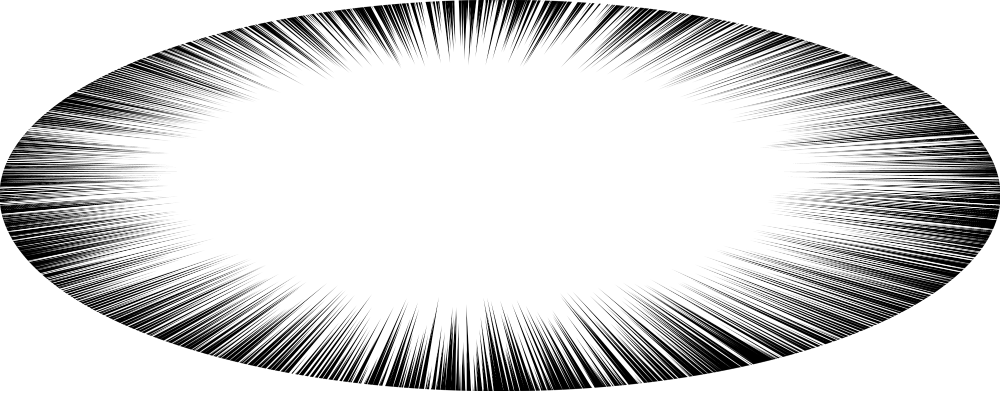
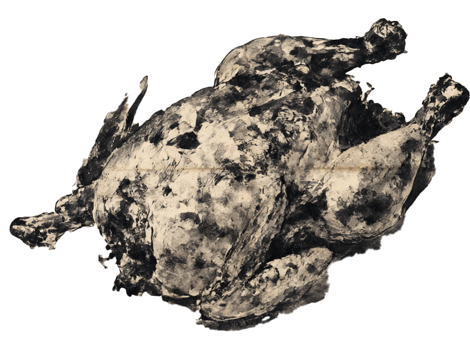
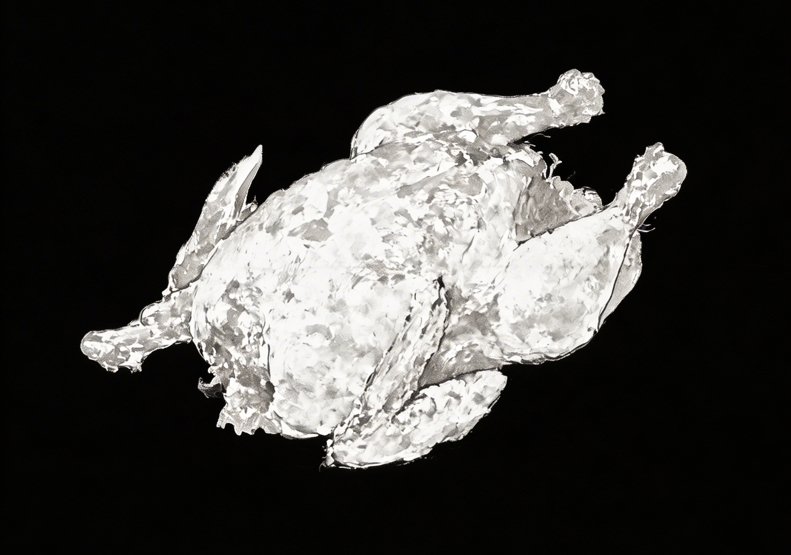

창작을 하는 그대들이여
번뜩이는 아이디어를 주는 신내림을
기다리고 계신가요.
영감의 신내림을 기다리다
완성도 못 하고 성적에
D
가 찍혀
눈물을 흘리며 휴학한 사람의
이야기를 아시나요?
호랑이 담배 피던 시절,
2021년도에 입학한 한 여자가 있었답니다. 그녀는 꽤나 우수한 학생이었습니다.
1, 2학년에는 과제만 받으면 척척 아이디어를 쏟아내는 그런 학생이었답니다.
그러다 3학년, 머릿속이 새하얘지고 아무것도 머릿속에서 꺼낼 수 없었답니다. 그녀는 이렇게 생각했습니다.
'좀 지나면 번뜩하고 떠오르겠지, 마치 신내림처럼...'
하지만 결국 그녀에게 신내림은 오지 않았습니다.
그렇게 한 학기가
다 가버리고 말았습니다.
그녀는 미완성을 눈앞에 두고 펑펑 울며
깨달았습니다.

신내림은 무슨, 이것이 번아웃이구나
그녀는 결국 학교를 떠났습니다.
새로운 경험을 하며 자유롭게 살았습니다.
재충전이 꽤 되었는지, 대학원에 가겠다는 큰 꿈까지 생겼습니다.
2년이라는 시간이 흐르고,
드디어 학교로 돌아갈 준비를 합니다.
마침내 다가온 복학의 날.
어라...? 학교가 원래 이랬나...?
학교는 너무나 낯설게 바뀌어 있었습니다.
자주 가던 가게들이 없어지고 새로운 가게들이 줄지어 있었습니다.
그중에서도 그녀의 눈에
띈 건 바로
'또봉이 통닭'

또봉이 통닭의 전설을 아시나요?
또봉이 통닭은 학교 정문 앞에 있었던 교수님들의 단골 치킨집이었습니다.
우연히 교수님을 만난다면,
정말 운이 좋다면,
교수님과 치맥을 할 수 있다는 전설이 있었습니다.
하지만 그것은 정말 옛날 옛적 전설이 되고 말았습니다.
또봉이 통닭은 역사 속으로 사라졌고
그 이야기를 아는 사람은
이제 그녀뿐이었습니다.
그녀의 친구들은
모두 학교를 떠났기 때문이죠.
이제 더 이상 이런 추억 이야기를 할 수 없다니. 그녀는 너무나 쓸쓸해졌습니다. 지각을 하면 화장실에 갔다고 변명을 전해줄 친구도, 함께 공강을 보낼 친구도 없습니다. 외롭고 막막한 학교생활에 숨이 막히는 듯했습니다.
하지만 도망칠 수는 없었죠. 떨리는 심장을 움켜잡고 기억을 더듬으며 강의실을 찾아갔습니다.
모두가 두 명 이상 짝을 지어 있었습니다. 그녀는 구석에 자리를 잡고 앉았습니다.
출석을 부르시던 교수님이 그녀를 보며 말했습니다.
그녀의 손에서는 땀이 흥건하게 났습니다.
모두가 그녀를 바라보았습니다.
교수님마저
절...아니, 아니
그녀를 기억하지 못하신다는 사실에 잠시 말을 잃었습니다.

또봉이 통닭의 전설
사실 그 주인공이 바로 그녀였거든요.
교수님은 초면이 아니었답니다.
그녀는 서운함 감정 속에서 조용히 체념했습니다.
그리고 이렇게 생각했습니다.
이 세상의 모든 복학생분들 존경합니다.
이 고난과 역경을 이겨내신거군요.
고난과 역경에도 살아가야 하는 법. 졸업은 해야하는 법 그녀는 마음을 다잡고 수업을 듣습니다. 과제를 해나갑니다. 하고있는 과제가 이해가 되지 않아도 적응해 나가고자 합니다.
소문에 의하면 D 받은 수업은 재수강한다고 해요. 근데 C도 있더랍니다. 대체 재수강을 몇 개나 해야 하는지, 참으로 신비로운 일이죠.
아니 아니 제 이야기는 아닙니다.
정말로 아니에요~
설마 C, D 성적표를 가지고 대학원에 가겠다고 하는 사람이 세상에 어디 있답니까?
진짜 저 아니라니까요~
그냥 옛날 옛적 이야기랍니다.
정말로요!
무사
졸업
기원